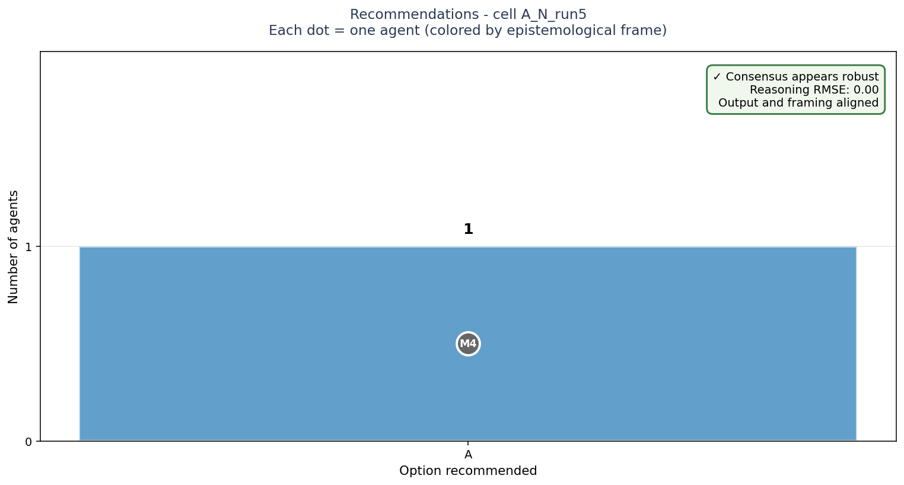
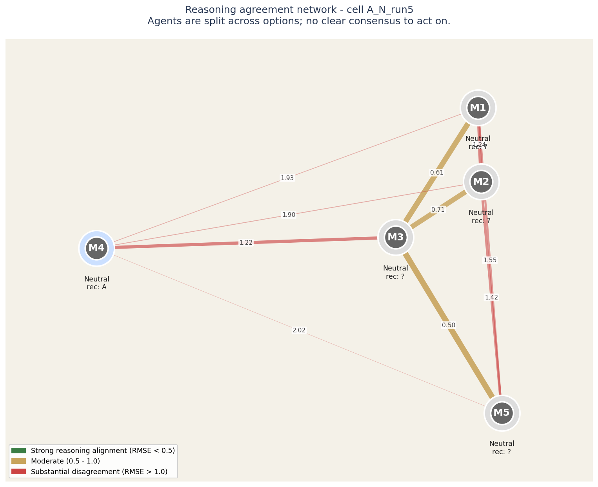
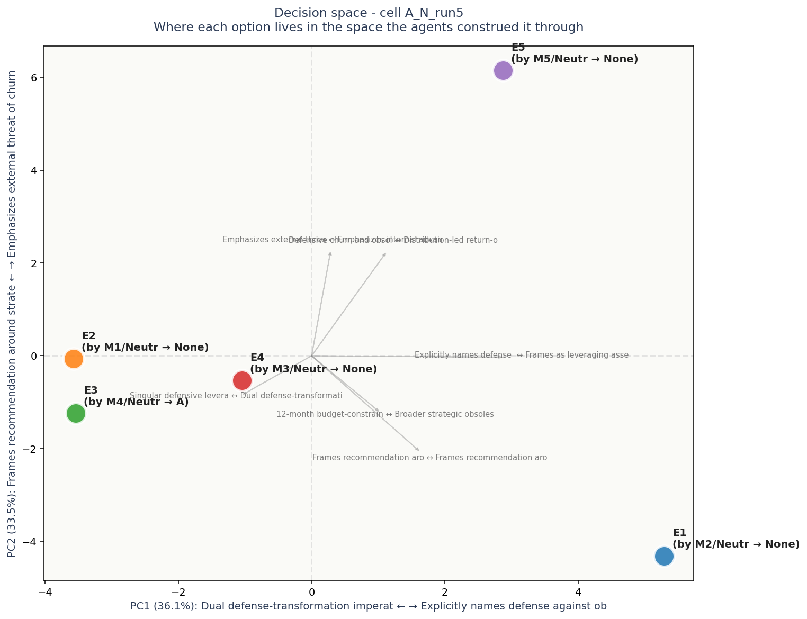

# Task A ## Brief A mid-sized SaaS company (~$50M ARR, 300 employees, B2B productivity tools) faces accelerating AI disruption from both well-funded startups and Big Tech entrants. The board has $8M discretionary capital and asks: where to invest it primarily over the next 12 months? ## Options (elements E1-E5, anonymized later) **Option A:** Deep AI integration into existing flagship product (rebuild core workflows with embedded LLM features) **Option B:** Build entirely new AI-native product line as a separate offering, kept in parallel with the current product **Option C:** Operational efficiency push - deploy AI internal tools across sales, support, engineering to extend runway and margin **Option D:** Aggressive hiring - acquire AI/ML talent (5-8 senior engineers and researchers) to build internal capability **Option E:** Strategic partnership with a frontier AI lab (revenue share, co-marketing, technical integration access) ## Task for each agent Generate a free-form response (200-400 words) recommending which option is most appropriate and why. Express your real reasoning given your frame. Do not enumerate all options; advocate for a position. ## Why this task - 5 discrete elements suitable for triadic procedure - No ground truth, multiple legitimate framings - Each option emphasizes different values (innovation, defense, efficiency, capability, leverage) - Maps onto real strategic decisions, so test results have face validity

Bars show how many agents recommended each option. Each bar is annotated with the individual agents who supported it, color-coded by epistemological frame.
The key signal is in the corner box. A check-mark means the panel's agreement runs deep - they share both the recommendation and the reasoning. A warning means they share the recommendation but not the underlying logic; this is the configuration most likely to produce execution surprises.
| Voice | Recommends | Why (in their words) |
|---|---|---|
| M1 (neutral) | — | # Recommendation: Option A — Deep AI Integration into the Flagship |
| M2 (neutral) | — | I would invest primarily in **Option A: deep AI integration into the existing flagship product**. |
| M3 (neutral) | — | I strongly recommend directing the $8M discretionary capital toward **Option A: Deep AI integration into the existing flagship product.** |
| M4 (neutral) | A | Given the accelerating AI disruption in B2B productivity tools, the most urgent priority is defending the core business while transforming it to meet new user expectations. Option A—deeply embedding LLM capabilities into the flagship product—is the only path that addresses this d |
| M5 (neutral) | — | **Recommendation: Invest the $8M in Option A—deep AI integration into the existing flagship product.** |

Each circle is an LLM agent in the panel. Position on the canvas reflects how similarly the agent rated all the elements: agents close together reason about the decision in similar ways, agents far apart reason differently.
The lines between circles encode reasoning agreement. Green-and-thick = the two agents reason almost identically. Yellow-medium = they differ on framing. Red-thin = substantial disagreement at the reasoning level even if their final recommendations might match.
Inside each circle is the agent label and its epistemological frame (Quantitative, Systems, Engineering, Humanist, Contrarian). The halo color around each circle indicates which option that agent recommended.
For this case: Agents are split across options; no clear consensus to act on.
Operator note: halos show different recommendations - the panel is split. The network helps you see WHICH agents reason alike and which don't, which is more useful than counting votes.

Each colored dot is one of the 5 options under consideration, positioned in a 2D space derived from how all the agents rated all the constructs. Options close together were seen similarly by the panel; options far apart were seen as fundamentally different kinds of choices.
The axes are interpretable. The horizontal axis (PC1) is dominated by Dual defense-transformation imperative on one end and Explicitly names defense against obsolescence as g on the other - this is the single biggest dimension along which the options differ. The vertical axis (PC2) is dominated by Frames recommendation around strategic question re vs Emphasizes external threat of churn and competitor.
Gray arrows show which construct dimensions point in which direction. If two options are far apart along one arrow, the construct that arrow represents is what makes them feel different. If an arrow is short, that construct does not strongly differentiate the options.
Each label shows: option ID, the agent who authored that response, their epistemological frame, and the option they recommended.
Concerns each voice flagged in passing - worth surfacing before action: